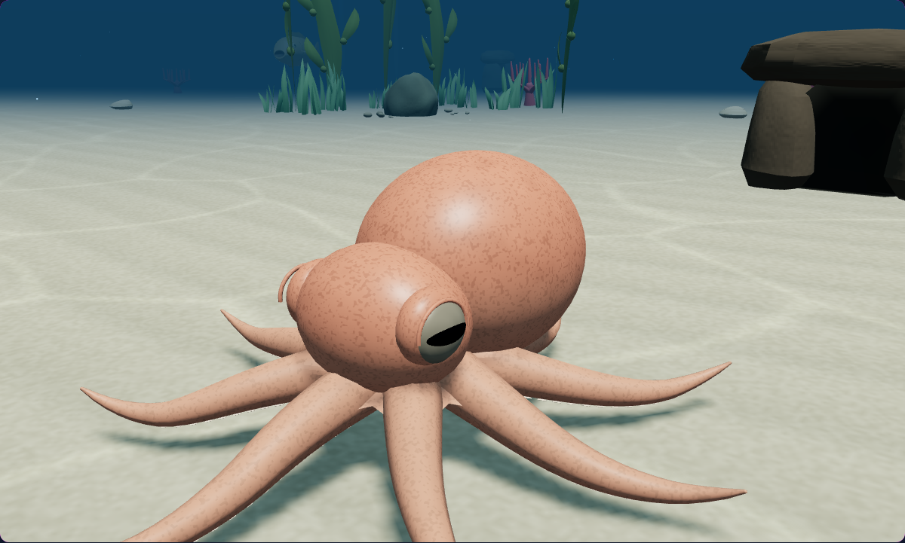
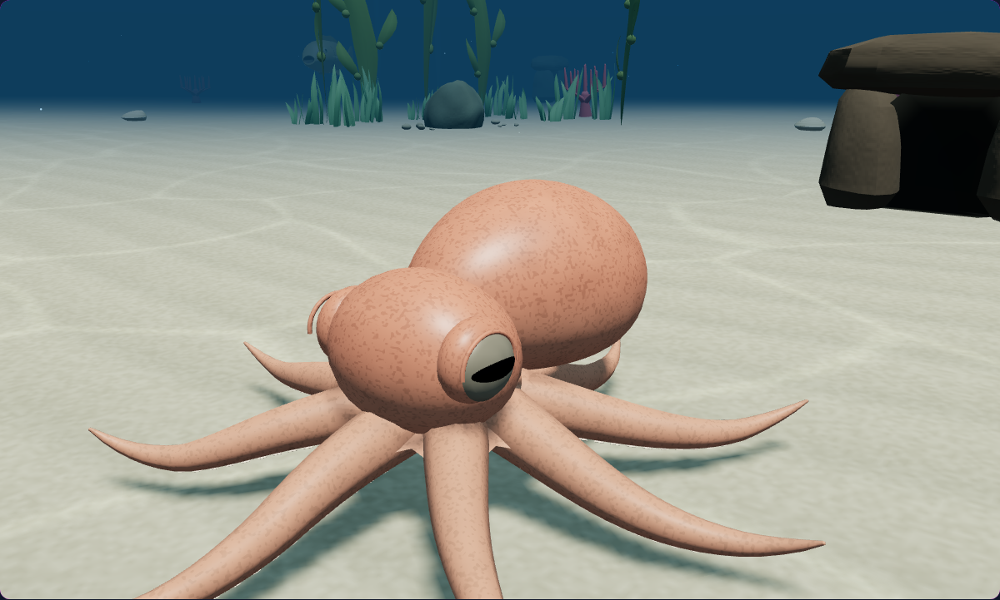
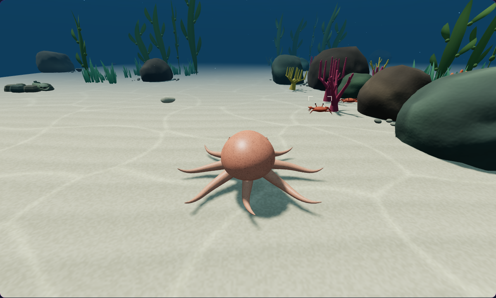
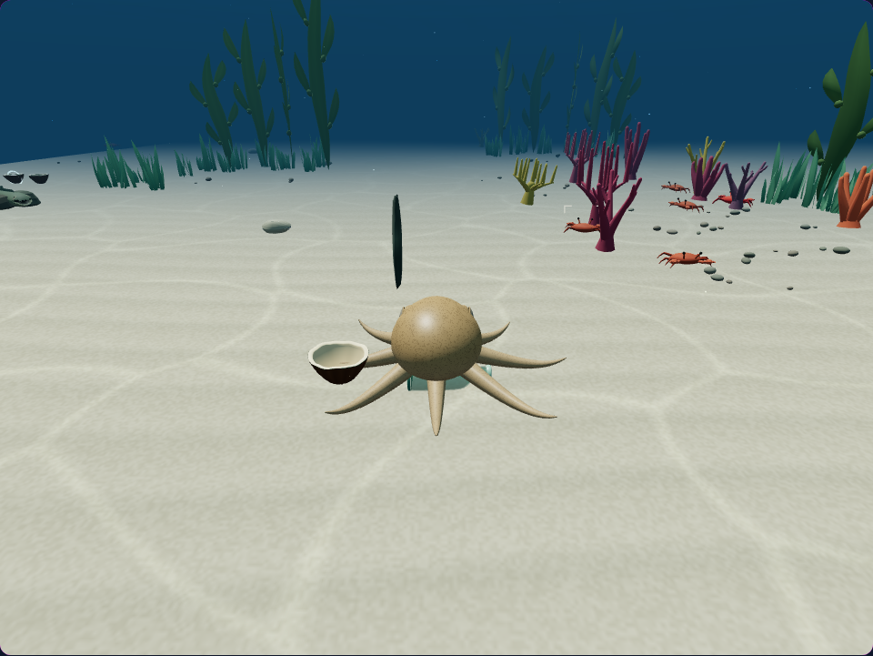
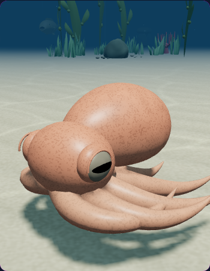

Cephalopod Hunter · Pass 68
Better silhouettes. Clearer views.
Reef octopuses have a softer, lower mantle. The camera stays above rising seabed, and nearby collectibles must be reachable around rocks.
A more natural octopus mantle
A broad rear mantle tapers toward the head, with a flatter underside. This refinement applies to the common, giant Pacific, mimic, Caribbean reef and coconut octopuses.

Previous
UpdatedStudy views use matched diagnostic cameras. The normal Follow camera sits slightly higher where the new terrain-clearance fix applies. The existing mesh and draw-call count are preserved.
Camera angles checked in play
Follow, Side, Tactical and Hunt keep a level horizon and face the intended target. A final clearance check now keeps the moving camera above slopes throughout its smoothed path. Inspection remains available with F; cycle the gameplay views with V.

FollowNative browser checks cover view controls, movement, swimming depth changes, terrain clearance and narrow-viewport framing. Regression tests exercise Hunt framing across all twelve species.

Rock-aware interaction checkPick up what you can reach
Pearls and portable shelters behind a rock no longer offer an unusable prompt or get collected through the obstacle. A reachable item farther away can still be selected.
The prompt and G key use the same selection. Pearl priority, carrying and dropping keep their existing controls.
Verified together
The revised mantle was checked through movement, camouflage, tight-space squeezing, pause and Reduced motion. Eye, head and arm attachments remain connected.
93 tests passed25 native checksUncommittedDesktop Chromium with narrow viewport emulation. No physical-device, audio or frame-rate benchmark is claimed. Controlled rock and terrain setups exercise the relevant edge cases.

Narrow viewport · mantle study